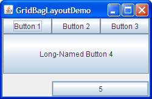

Lección: Disponer Componentes Dentro de un Contenedor
Cómo Usar GridBagLayout
Nota: Esta lección cubre la escritura de código de diseño a mano, lo cual puede ser desafiante. Si no está interesado en aprender todos los detalles de la gestión del diseño, preferirá usar el gestor de diseño
GroupLayout combinado con una herramienta de construcción para diseñar su IGU.
Una de tales herramientas de construcción es el
EID NetBeans. De otra manera, si quiere
codificar a mano y no quiere usar GroupLayout, entonces se recomienda GridBagLayout
como el gestor de diseño más flexible y potente.
Si está interesado en usar JavaFX para crear su IGU, vea Trabajar Con Diseños en JavaFX.
Aquí tiene una imagen de un ejemplo que usa
GridBagLayout.

Pulse el botón Lanzar para ejecutar GridBagLayoutDemo usando Java™ Web Start ( descargue KDJ 7 o posterior). Alternativamente, para compilar y ejecutar el ejemplo usted mismo, consulte el índice de ejemplos.
El código de GridBagDemo está en
GridBagLayoutDemo.java.
GridBagLayout es uno de los más flexibles ─ y complejos ─ gestores de
diseño que la plataforma de Java suministra. Un GridBagLayout coloca componentes en una cuadrícula
de filas y columnas, permitiendo a componentes especificos expandirse por múltiples filas o columnas. No todas
las filas necesariamente tienen la misma altura. De forma similar, no todas las columnas necesariamente tienen
la misma anchura. Esencialmente, GridBagLayout coloca los componentes en rectángulos (celdas) en
una cuadrícula, y entonces usa los tamaños preferidos de los componentes para determinar qué grandes deben ser
las celdas.
La siguiente figura muestra la cuadrícula para el applet precedente. Como puede ver, la cuadrícula tiene tres filas y tres columnas. El botón en la segunda fila se expande a todas las columnas; el botón en la tercera fila se expande en las dos columnas de la derecha.
Si agranda la ventana como se muestra en la siguiente figura, notará que la fila inferior, la cual contiene
el botón 5, obtiene todo el nuevo espacio vertical. El espacio horizontal nuevo se divide de manera uniforme
entre todas las columnas. Este comportamiento de cambio de tamaño se basa en los pesos que el programa asigna a
los componentes individuales en el GridBagLayout. También notará que cada componente ocupa todo el
espacio horizontal disponible ─ pero no (como usted puede ver con el botón 5) todo el
espacio vertical disponible. Este comportamiento es también especificado por el programa.
La forma en que el programa especifica las características de tamaño y posición de sus componentes es
especificando restricciones para cada componente. La aproximación preferida para establecer
restricciones en un componente es usar la variante Container.add, pasándole un objeto
GridBagConstraints, como se demostrará en las siguientes secciones.
Las secciones siguientes explican las restricciones que puede establecer y suministra ejemplos.
Especificar Restricciones
El siguiente código es típico de lo que va en un contenedor que usa un
GridBagLayout.
Verá un ejemplo más detallado en la siguiente sección.
JPanel pane = new JPanel(new GridBagLayout());
GridBagConstraints c = new GridBagConstraints();
//Para cada componente a ser añadido a este contenedor:
//...Crea el componente...
//...Establece las variables de instancia en la instancia GridBagConstraints...
pane.add(theComponent, c);
Como habrá adivinado del ejemplo anterior, es posible reusar la misma instancia GridBagConstraints
para múltiples componentes, incluso si los componentes tienen diferentes restricciones. Sin embargo, se
recomienda que no reuse GridBagConstraints, ya que esto puede llevarlo a introducir errores
sutiles si olvida restablecer los campos para cada nueva instancia.
Nota: La discusión siguiente asume que
GridBagLayout controla un contenedor
que tiene un componente con orientación de izquierda a derecha.
Puede establecer las siguientes variables de instancia
GridBagConstraints:
-
gridx,gridy -
Especifica la fila y columna en la esquina superior izquierda del componente. La columna más a la izquierda
tiene la dirección
gridx=0y la fila superior tiene direccióngridy=0. UseGridBagConstraints.RELATIVE(el valor por defecto) para especificar que el componente es colocado justo a la derecha de (paragridx) o justo debajo de (paragridy) el componente que fue añadido al contenedor justo antes de que este componente fuera añadido. Recomendamos especificar los valoresgridxygridypara cada componente en vez de simplemente usarGridBagConstraints.RELATIVE; esto tiende a dar como resultado diseños más predecibles. -
gridwidth,gridheight -
Especifica el número de columnas (para
gridwidth) o filas (paragridheight) en el área de visualización del componente. Estas restricciones especifican el número de celdas que el componente usa, no el número de píxeles que usa. El valor por defecto es 1. UseGridBagConstraints.REMAINDERpara especificar que el componente sea el último en su fila (paragridwidth) o columna (paragridheight). UseGridBagConstraints.RELATIVEpara especificar que el componente sea el siguiente al último en su propia fila (paragridwidth) o columna (paragridheight). Recomendamos especificar los valoresgridwidthygridheightpara cada componente en vez de simplemente usarGridBagConstraints.RELATIVEyGridBagConstraints.REMAINDER; esto tiende a dar como resultado diseños más predecibles.Nota:
GridBagLayoutno permite a los componentes expandirse por múltiples filas a menos que el componente esté en la columna más a la izquierda o haya especificado valores positivosgridxygridypara el componente. -
fill -
Usado cuando el área de visualización del componente es más grande que el tamaño solicitado por el
componente para determinar si y cómo redimensionar el componente. Los valores válidos (definidos como
constantes
GridBagConstraints) incluidoNONE(por defecto),HORIZONTAL(hace el componente lo suficientemente ancho para rellenar su area de visualización horizontalmente, pero no cambia su altura),VERTICAL(hace al componente lo suficientemente alto para llenar su área de visualización verticalmente, pero no cambia su anchura), yBOTH(hace que el componente llene su área de visualización completamente). -
ipadx,ipady -
Especifica el rellenado interno: cuánto añadir al tamaño del componente. El valor por defecto es cero. El
ancho del componente será al menos su anchura mínima más
ipadx*2píxeles, ya que el rellenado se aplica a ambos lados del componente. Del mismo modo, la altura del componente será al menos su altura mínima másipady*2píxeles. -
insets -
Especifica el rellenado externo del componente -- La cantidad mínima de espacion entre el componente y los
límites de su área de visualización. El valor se especifica como un objeto
Insets. Por defecto, un componente no tiene relleno externo. -
anchor -
Usado cuando el componente es más pequeño que su área de visualización para determinar dónde (dentro del
área) se colocará el componente. Los valores válidos (definidos como constantes
GridBagConstraints) sonCENTER(por defecto),PAGE_START,PAGE_END,LINE_START,LINE_END,FIRST_LINE_START,FIRST_LINE_END,LAST_LINE_END, yLAST_LINE_START.Aquí tiene una imagen de cómo estos valores son interpretados en un contenedor que tiene la orientación de componentes por defecto, de izquierda a derecha.
FIRST_LINE_START PAGE_START FIRST_LINE_END LINE_START CENTER LINE_END LAST_LINE_START PAGE_END LAST_LINE_END
Nota de versión: Las constantesPAGE_*and*LINE_*fueron introducidas en 1.4. Las versiones anteriores requerían valores con nombres de brújula. Por ejemplo,NORTHEASTindica la parte superior-derecha del área de visualización. Recomendamos que utilice las nuevas constantes, en su lugar, ya que permiten una localización más fácil.
-
weightx,weighty -
Especificar pesos es un arte que puede tener un impacto significativo en la apariencia de los componentes
que un
GridBagLayoutcontrola. Los pesos son usados para determinar cómo se distribuye el espacio entre columnas (weightx) y entre filas (weighty); esto es importante para especificar el comportamiento de redimensionamiento.A menos que especifique al menos un valor no cero para
weightxoweighty, todos los componentes se agrupan en el centro de su contenedor. Esto es debido a que cuando el peso es 0.0 (por defecto), elGridBagLayoutcoloca cualquier espacio extra entre su cuadrícula de celda y los límites del contenedor.Generalmente los pesos son especificados con 0.0 y 1.0 siendo los extremos: los números intermedios se usan según sea necesario. Los números más grandes indican que la fila o columna del componente obtendrán más espacio. Para cada columna, el peso está relacionado con el más alto
weightxespecificado para un componente dentro de esa columna, con cada peso de componente multicolumna siendo parttido de alguna forma entre las columnas en las que el componente está. Del mismo modo, cada peso de fila está relacionado al más altoweightyespecificado para un componente dentro de esa fila. El espacio extra tiende a ir hacia la columna de la derecha y fila inferior.
La siguiente sección describe las restricciones en profundidad, en el contexto de explicar cómo el programa de ejemplo funciona.
El Ejemplo Explicado
Aquí, de nuevo, tiene una imagen de la aplicación GridBagLayoutDemo.
Pulse el botón Lanzar para ejecutar GridBagLayoutDemo usando Java™ Web Start (descargue KDJ 7 o posterior). Alternativamente, para compilar y ejecutar el ejemplo usted mismo, consulte el índice de ejemplos.
El código siguiente crea el GridBagLayout y los componentes que maneja. Puede encontar el fichero
fuente entero en
GridBagLayoutDemo.java
.
JButton button;
pane.setLayout(new GridBagLayout());
GridBagConstraints c = new GridBagConstraints();
if (shouldFill) {
//altura natural, ancho máximo
c.fill = GridBagConstraints.HORIZONTAL;
}
button = new JButton("Button 1");
if (shouldWeightX) {
c.weightx = 0.5;
}
c.fill = GridBagConstraints.HORIZONTAL;
c.gridx = 0;
c.gridy = 0;
pane.add(button, c);
button = new JButton("Button 2");
c.fill = GridBagConstraints.HORIZONTAL;
c.weightx = 0.5;
c.gridx = 1;
c.gridy = 0;
pane.add(button, c);
button = new JButton("Button 3");
c.fill = GridBagConstraints.HORIZONTAL;
c.weightx = 0.5;
c.gridx = 2;
c.gridy = 0;
pane.add(button, c);
button = new JButton("Long-Named Button 4");
c.fill = GridBagConstraints.HORIZONTAL;
c.ipady = 40; //hace este componente alto
c.weightx = 0.0;
c.gridwidth = 3;
c.gridx = 0;
c.gridy = 1;
pane.add(button, c);
button = new JButton("5");
c.fill = GridBagConstraints.HORIZONTAL;
c.ipady = 0; //restablecido a lo predeterminado
c.weighty = 1.0; //solicita cualquier espacio vertical adicional
c.anchor = GridBagConstraints.PAGE_END; //fondo del espacio
c.insets = new Insets(10,0,0,0); //relleno superior
c.gridx = 1; //alineado con el botón 2
c.gridwidth = 2; //2 columnas de ancho
c.gridy = 2; //tercera fila
pane.add(button, c);
Este ejemplo usa un instancia GridBagConstraints para todos los componentes que el
GridBagLayout gestiona, sin embargo en situaciones de la vida real se recomienda que no reutilize
GridBagConstraints, ya que esto puede llevarlo a introducir errores sutiles si olvida restablecer
los campos para cada nueva instancia. Justo antes de que cada componente se añada al contenedor, el código
establece (o restablece a los valores por defecto) las variables de instancia apropiadas en el objeto
GridBagConstraints. Luego agrega el componente a su contenedor, especificando el objeto
GridBagConstraints como el segundo argumento al método add.
Por ejemplo, para hacer que el botón 4 sea extra alto, el ejemplo tiene este código:
c.ipady = 40;
Y antes de establecer las restricciones del componente siguiente, el código restablece el valor de
ipady a su valor por defecto:
c.ipady = 0;
Si el área de visualización del componente es más grande que el componente en sí mismo, luego puede especificar
el paradero en el área de visualización donde se mostrará el componente utilizando la restricción
GridBagConstraints.anchor. Los valores de la restricción anchor pueden ser absolutos
(norte, sur, este, oeste, y así), o relativo a la orientación (al principio de la página, al final de la línea,
al inicio de la primera línea, y así), o relativo a la línea base del componente. Para una lista completa de los
valores posibles de la restricción anchor, incluyendo valores relativos a la línea base, vea la
documentación IPA para
GridBagConstraints.anchor. Puede ver en el extracto del código anterior que el Botón 5
especifica que debe mostrarse al final del área de visualización estableciendo un anclaje en
GridBagConstraints.PAGE_END.
Nota: Los ejemplos del Tutorial usan una manera diferente para especificar el objeto de restricciones, lo cual podría ver en otros programas también. En lugar de especificar las restricciones con el método
add, nuestros ejemplos invocan el método setConstraints sobre el objeto
GridBagLayout. Por ejemplo:
GridBagLayout gridbag = new GridBagLayout();
pane.setLayout(gridbag);
...
gridbag.setConstraints(button, c);
pane.add(button);
Container.add ya que hará el código más limpio que si
usa setConstraints.
Aquí tiene una tabla que muestra todas las restricciones para cada componente en el panel de contenido de GridBagLayoutDemo. Los valores que no son los predeterminados están marcados en negrita. Los valores que son diferentes de aquellos en la entrada de la tabla previa están marcados en cursiva.
| Componente | Restricciones |
|---|---|
| Todos los componentes |
ipadx = 0
fill = GridBagConstraints.HORIZONTAL
|
| Button 1 |
ipady = 0 weightx = 0.5 weighty = 0.0 gridwidth = 1 anchor = GridBagConstraints.CENTER insets = new Insets(0,0,0,0) gridx = 0 gridy = 0
|
| Button 2 |
weightx = 0.5
gridx = 1
gridy = 0
|
| Button 3 |
weightx = 0.5
gridx = 2
gridy = 0
|
| Button 4 |
ipady = 40
weightx = 0.0
gridwidth = 3
gridx = 0
gridy = 1
|
| Button 5 |
ipady = 0
weightx = 0.0
weighty = 1.0
anchor = GridBagConstraints.PAGE_END
insets = new Insets(10,0,0,0)
gridwidth = 2
gridx = 1
gridy = 2
|
GridBagLayoutDemo tiene dos componentes que ocupan múltiples columnas (botones 4 y 5). Para hacer el botón 4
muy alto, añadimos relleno interno (ipady) a él. Para colocar espacio entre los botones 4 y 5,
usamos inserciones para añadir un mínimo de 10 píxeles sobre el botón 5, y hacemos que el botón 5 abraze el
borde inferior de su celda.
Todos los componentes en el contenedor pane son tan anchos como es posible, dadas las celdas que
ocupan. El programa logra esto estableciendo la variable de instancia GridBagConstraints
fill en GridBagConstraints.HORIZONTAL,
The program accomplishes this by setting the GridBagConstraints fill instance variable
to GridBagConstraints.HORIZONTAL, dejándolo en ese ajuste para todos los componentes. Si el
programa no especifica el relleno, los botones estarían en su ancho natural, como este:
Cuando agranda la ventana de GridBagLayoutDemo, las columnas crecen proporcionalmente. Esto es porque cada
componente en la primera fila, donde cada componente tiene un ancho de una columna, tiene
weightx = 0.5. El valor real de estos componentes weightx no es importante. Lo que
importa es que todos los componentes, y consecuentemente, todas las columnas, tienen un peso igual que es mayor
que 0. Si ningún componente gestionado por el GridBagLayout tiene establecido
weightx, entonces cuando el contenedor del componente sea más ancho, los componentes se quedarán
agrupados en el centro del contenedor, como este:
Si el contenedor tiene un tamaño que es más pequeño o más grande que el tamaño preferido, entonces cualquier
espacio es distribuído de acuerdo a los pesos de GridBagContainer.
Tenga en cuenta que si amplía la ventana, la última fila es la única que se hace más alta. Esto es porque sólo
el botón 5 tiene un weighty mayor que cero.
La IPA de GridBagLayout
Las clases GridBagLayout y GridBagConstraints tienen un sólo constructor, sin
argumentos. En vez de invocar métodos sobre el objeto GridBagConstraints, manipule sus variables
de instancia, como se describe en Especificar restricciones. Generalmente, el
único método que invoca en un objeto GridBagLayout es setConstraints, como se
demostró en El Ejemplo Explicado.
Ejemplos que Usan GridBagLayout
Puede encontrar ejemplos del uso de GridBagLayout a través de este tutorial. La tabla siguiente
lista unas pocas.
| Ejemplo | Dónde Se Describe | Notas |
|---|---|---|
GridBagLayoutDemo
|
Esta sección | Usa muchas características ─ pesos, inserciones, rellenado interno, relleno horizontal, posicionamiento exacto de celda, celdas multi-columna, y anclaje (posicionamiento del componente dentro de un celda). |
TextSamplerDemo
|
Usar Componentes de Texto | Alinea dos pares de etiquetas y campos de texto, además agrega una etiqueta en todo el ancho del contenedor. |
ContainerEventDemo
|
Cómo Escribir un Oyente de Contenedor | Posiciona cinco componentes dentro de un contenedor, usando pesos, relleno, y posicionamiento relativo. |